Pustak Bookstore user manual
Welcome to Pustak Bookstore
Pustak turns a WordPress site into an online bookshop for India. You list books with their price and stock, customers buy them in a few taps, and they pay by UPI (Google Pay, PhonePe, Paytm, BHIM or any bank app) or Cash on Delivery. There is no payment gateway and no fees. Orders, shipping, tracking, returns and refunds are all kept in the plugin. No WooCommerce is needed.
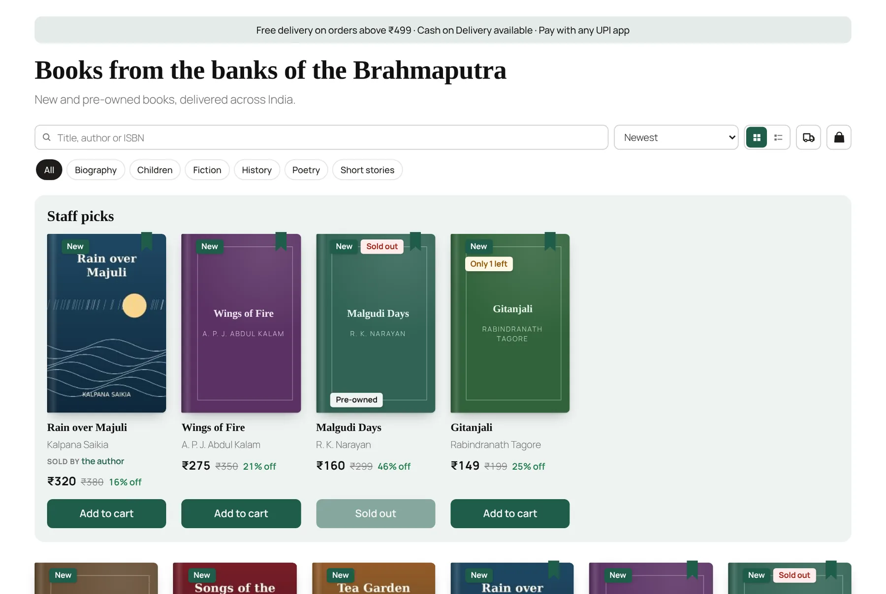
What you can do with it
List your books
Price and MRP, stock, ISBN, language, pages, new or pre-owned, and a cover — or a generated cloth-bound one.
🎨Design the store
Six one-click looks, colours, fonts for Hindi and Assamese/Bengali titles, grid, list or shelves, with a live preview.
₹Sell with UPI or COD
A QR code on computers, Google Pay / PhonePe / Paytm buttons on phones, and Cash on Delivery with limits.
📦Run the orders
Confirm payments, ship with a tracking number, keep customers informed by email, cancel and restock.
↩Handle returns
Customers ask for a return from the tracking page; you record what came back and the refund you sent.
✍Let authors sell
Authors sell their own books through your store, are paid directly, and run their orders from a private page.
Who uses it
| Person | Where they work | What they do |
|---|---|---|
| Customer | The store page, the book pages and the Track Order page | Browse, buy, pay, give the UPI reference number, track the order, ask for a return. No account is needed. |
| Store staff | The WordPress dashboard (Editor or Administrator) | Add books and authors, confirm payments, ship orders, record returns and refunds. |
| Author selling directly | Their private order page (a link, no login) | Confirm that the customer’s payment arrived, send the parcel, answer return requests, mark refunds sent. |
| Administrator | The dashboard | Everything staff can do, plus Settings, the Storefront designer and Direct sales. |
Four ideas to know first
- A person confirms each UPI payment. UPI pay-links send money straight to your UPI ID, so no bank tells the plugin that it arrived. The customer pays and types in the 12-digit UPI reference number (UTR). You find that payment in your UPI app or bank statement and click Payment received. See How UPI payments work.
- Stock is reserved when the order is placed. Copies come off stock as soon as an order is placed, and go back if you cancel it. Cancel unpaid UPI orders after a day or two so the books can be sold again.
- One seller per order. A cart holds either your store’s own books or one author’s books — never a mix. So every order has one seller, one payment, one parcel and one tracking number. See One seller per order.
- Customers don’t need an account. They track an order with its number and their mobile number, and their details are remembered on their own device for next time.
Getting started
Installing
Pustak is one plugin. It works with block themes and classic themes, and needs nothing else.
What you need
- WordPress 6.0 or later and PHP 7.4 or later.
- A UPI ID to be paid on. A business or merchant UPI ID (Google Pay for Business, PhonePe Business, Paytm Business or your bank’s merchant UPI) works best: some UPI apps block pay-links with a fixed amount to personal UPI IDs, though scanning the QR code still works.
- Working email from your site, so that you, your customers and your authors are told about orders. Many hosts don’t send WordPress email reliably; an SMTP plugin such as WP Mail SMTP fixes that.
Installing the plugin
- In the dashboard, go to Plugins → Add New → Upload Plugin, choose
pustak.zipand click Install Now, then Activate. - Go to Bookstore → Settings, enter your UPI ID and save. Scan the test QR code that appears with your phone to check that a ₹1 payment would reach the right account (you don’t need to complete it).
- Add books under Bookstore → Add New Book — or click Add 6 sample books on the Settings page to try the store first. Delete the samples any time.
- Add the Bookstore and Track Order pages to your site’s menu.
Activating the plugin creates those two pages for you:
| Page | Contains | What it is |
|---|---|---|
| Bookstore | [pustak_store] | The catalogue, with search, genres, cart and checkout. |
| Track Order | [pustak_track] | Where customers look up an order, pay, see its progress and ask for a return. |
If either page is deleted, Recreate missing store pages on the Settings page makes it again.
The Bookstore menu
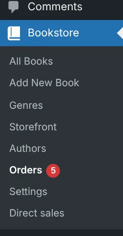
| Item | What it is for |
|---|---|
| All Books | Your catalogue, with cover, author, price, stock and seller. More |
| Add New Book | A new book. More |
| Genres | The genre buttons in the store, and the shelves. |
| Storefront | How the store looks. More |
| Authors | Author profiles and pages. More |
| Orders | Every order. The count is payments to verify, orders to ship and return requests to answer. More |
| Settings | Payments, delivery, returns, sharing and store details. More |
| Direct sales | Authors who sell their own books. More |
Who can do what
| WordPress role | Can use |
|---|---|
| Administrator | Everything, including Settings, Storefront and Direct sales. |
| Editor | Books, genres, authors and orders, and the Bookstore box on the dashboard. |
Deleting the plugin does not delete your books, authors or orders. They stay in your WordPress database and come back if you install Pustak again.
Getting started
Settings
Bookstore → Settings holds how you are paid, delivery charges, returns, sharing and your store’s details. All sections are saved together with Save Changes at the bottom. The Customise storefront button at the top opens the Storefront designer.
UPI payments
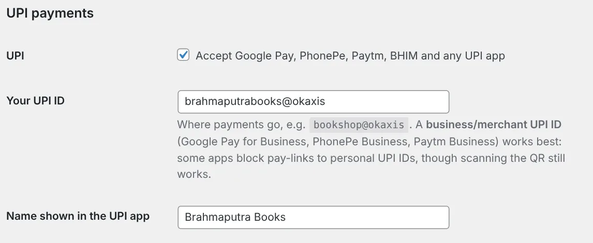
- UPI: accept payment from any UPI app. Untick it to sell by Cash on Delivery only.
- Your UPI ID: where the money goes, such as
bookshop@okaxis. An ID that doesn’t look like a UPI ID is refused with a message, and the old one is kept. UPI is offered at checkout only when it is ticked and an ID is saved. - Name shown in the UPI app: the payee name the customer sees. Left empty, the store name is used.
Cash on Delivery
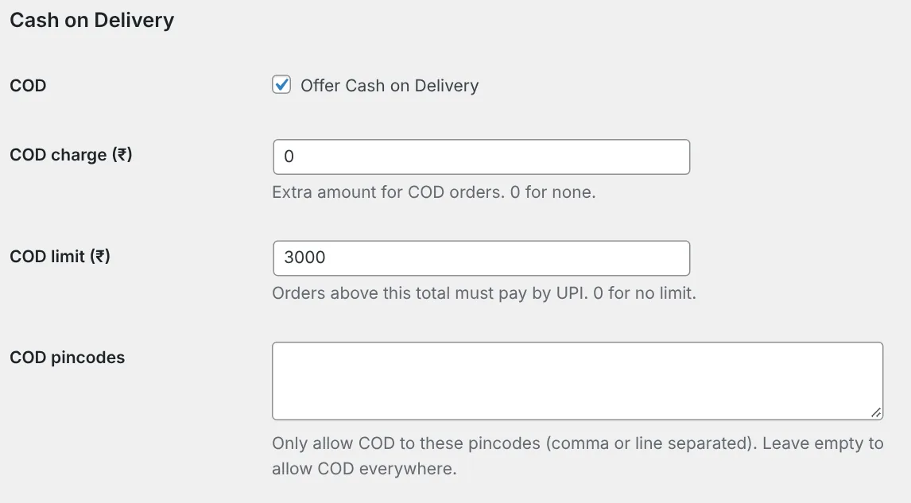
- COD: offer Cash on Delivery.
- COD charge (₹): an extra amount added to COD orders. 0 for none.
- COD limit (₹): orders above this total must pay by UPI. 0 for no limit. The default is ₹5,000.
- COD pincodes: allow COD only to these pincodes, separated by commas or on separate lines. Leave empty to allow it everywhere. Customers can check their pincode on any book page.
Delivery
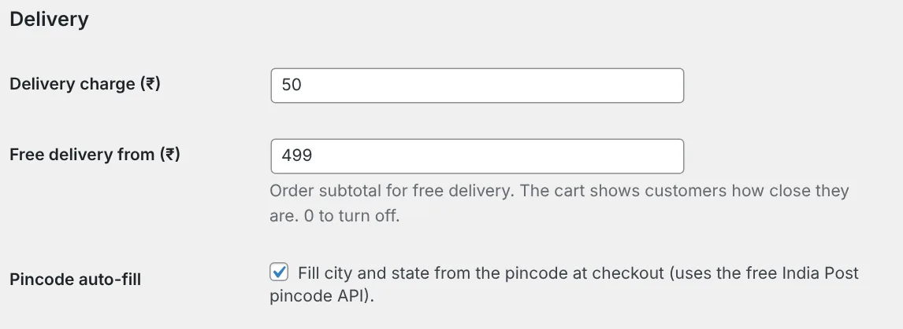
- Delivery charge (₹): per order. The default is ₹50.
- Free delivery from (₹): orders whose books total at least this amount ship free. The cart shows customers how much more they need. 0 turns free delivery off. The default is ₹499.
- Pincode auto-fill: fills in the city and state from the pincode at checkout, using the free India Post pincode service (
api.postalpincode.in). Only the pincode is sent, from the customer’s browser.
Returns
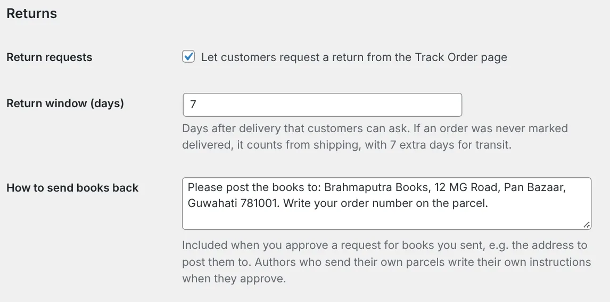
- Return requests: lets customers ask for a return from the Track Order page.
- Return window (days): how long after delivery they can ask. The default is 7. If an order was never marked delivered, the window counts from shipping, with 7 extra days for transit.
- How to send books back: included in the email when you approve a request, for example the address to post the books to. Authors who send their own parcels write their own instructions when they approve.
See Returns and refunds for the whole process.
Sharing
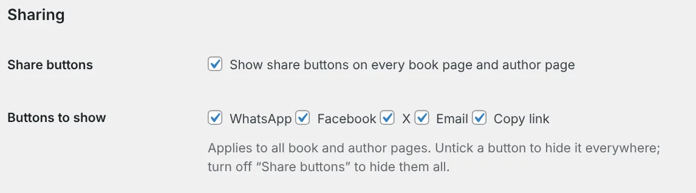
Share buttons puts WhatsApp, Facebook, X, Email and Copy link buttons on every book page and author page. Untick a button to hide it everywhere, or untick Share buttons to hide them all. On phones they show as icons only.
Store
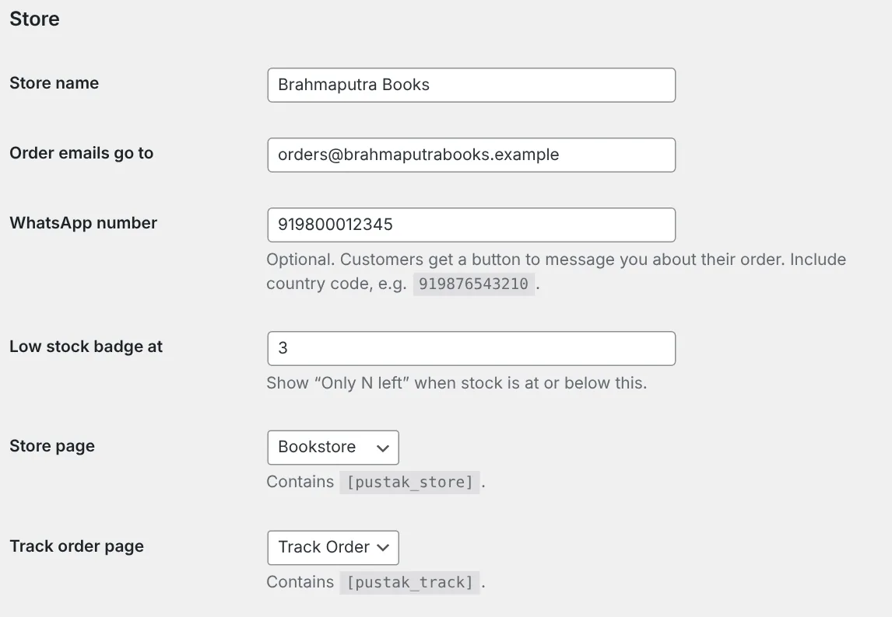
- Store name: used in emails, the checkout and the UPI app.
- Order emails go to: where you are told about new orders, payments to verify and return requests.
- WhatsApp number: optional. Customers get a button to message you about their order. Include the country code, for example
919876543210. - Low stock badge at: books show “Only 2 left” when stock is at or below this number. The default is 3.
- Store page and Track order page: the pages with
[pustak_store]and[pustak_track]. Change them only if you made your own pages.
Test your UPI QR and Get started
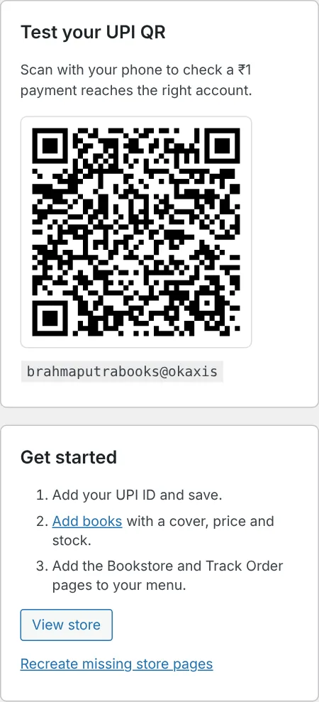
Beside the settings:
- Test your UPI QR: once your UPI ID is saved, a QR code for ₹1 appears. Scan it with your phone and check that your app shows the right name and account. You don’t have to complete the payment.
- Get started: the first three steps, a View store button, Add 6 sample books while you have none, and Recreate missing store pages.
Getting started
Storefront designer
Bookstore → Storefront shows a live preview of your real store beside the controls. Every change shows in the preview at once; nothing reaches your website until you click Save.
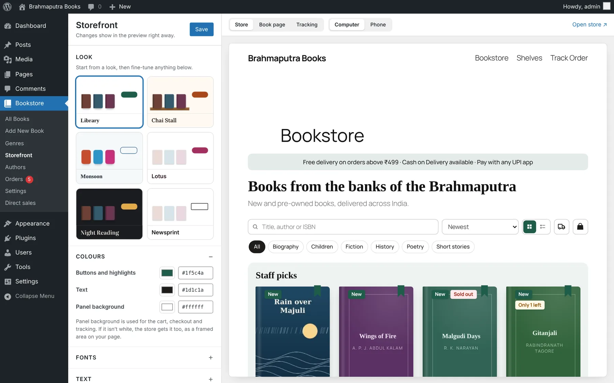
Above the preview, choose what to look at — Store, Book page or Tracking — and how big a screen: Computer or Phone. Open store opens the real page in a new tab.
Look
Start from one of six looks, then fine-tune anything below. A look sets the colours, the title font, the card style, the cover shape and style, and the buttons. It leaves your text and content options alone.
| Look | Feel |
|---|---|
| Library (default) | Deep green, classic book serif, bound-book covers. |
| Chai Stall | Warm brown on cream, Lora titles, books on a bookshelf, pill buttons. |
| Monsoon | Blue-grey, Noto Serif (with Hindi and Assamese/Bengali), framed cards, outline buttons. |
| Lotus | Lotus pink, Mukta titles, flat paper covers. |
| Night Reading | Amber on a dark background, Literata titles. |
| Newsprint | Black and white, your theme’s font, square outline buttons. |
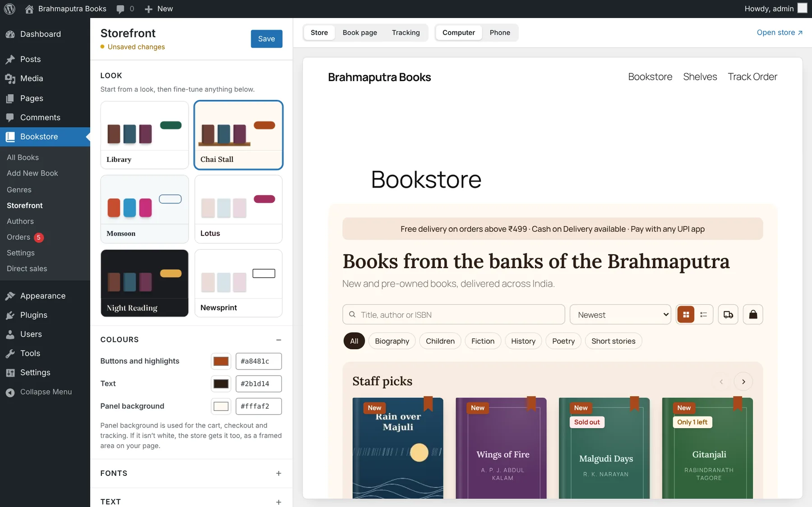
Colours and fonts
- Colours: buttons and highlights, text, and panel background. The panel background is used for the cart, checkout and tracking; if it isn’t white, the store gets it too, as a framed area on your page. A warning appears if the text would be hard to read.
- Book titles and headings: your theme’s font, a classic book serif (nothing to download), Literata, Lora, Noto Serif (English, हिन्दी, অসমীয়া/বাংলা) or Mukta (English and हिन्दी).
- Everything else: your theme’s font, the device font, Noto Sans, Mukta, or Hind Siliguri (English and অসমীয়া/বাংলা).
Google fonts are loaded from Google’s servers. “Same as my theme”, “Classic book serif” and “Device font” load nothing extra.
Text
Size, weight and colour for headings, book titles on cards, author names, prices (twice as large on the book page), descriptions (with line spacing), buttons and the announcement bar. Headings can be normal, UPPERCASE or Small caps; buttons normal or UPPERCASE. Colours left on Auto follow the look you picked, so they stay readable if you change it. Reset text styles puts them all back.
Layout and pages
- Arrange books: Grid, List or Shelf per genre (a row for each genre, showing how many books it has). See Layouts.
- Let shoppers switch between grid and list: adds a switch to the toolbar. Each shopper’s choice is remembered on their device.
- Split books into pages, with Books per page (4–60, default 12), moved through with Page numbers or a “Show more” button. Pages apply to Grid and List; shelves always show every book.
- Book size (small, medium, large), Card style (plain, framed, bookshelf), Cover shape (bound book, flat, rounded) and Covers for books without a photo (cloth, paper, bold).
Buttons and cart
- Button shape (square, rounded, pill) and Buttons on book cards (filled or outline).
- Button text: “Add to cart” by default — for example “Add to bag”, “Buy” or “किताब जोड़ें”.
- Floating cart button and drawer: on the right or the left.
- Cart button in the store toolbar and Track order button (delivery van): show or hide each.
Top of the store
- Announcement bar: a line across the top. Leave the text empty and it writes itself from your settings, for example “Free delivery on orders above ₹499 · Cash on Delivery available · Pay with any UPI app”.
- Heading and Intro line: for example “Books from the banks of the Brahmaputra”.
- Staff picks row, with its title: books with Staff pick ticked appear here.
- “New” badge for books added in the last so many days (default 30; 0 turns it off).
Book page
- Use the Pustak book page design: the 3D book, buying panel, author profile and related books (see The book page). Turn it off to use your theme’s own page with a simple buy box.
- About the author and the “You may also like” row: show or hide each. Choose Book page above the preview to see them.
Show or hide
Switch any of these on or off across the store: the search box, the sort menu, genre buttons, author names, MRP and % off, “Only 2 left” badges, “Pre-owned” badges, and “Buy now” on book pages.
The catalogue
Adding books
Each book is a page of its own with a title, a description, a cover, and a box of shop details: Price, stock and details.
The book screen
Go to Bookstore → Add New Book:
- Title: the book’s title.
- Description (the main editor): shown as “About this book” on the book page.
- Excerpt: a short blurb, shown under each book in list view and on the back cover. Left empty, the first words of the description are used.
- Book cover (the featured image): a photo or scan of the front cover. Without one, the store draws a cloth-bound cover with the title and author, in a colour chosen from the title. Its style follows Covers for books without a photo.
- Genres: tick one or more. They become the genre buttons in the store, and the shelves in the Shelf per genre layout.
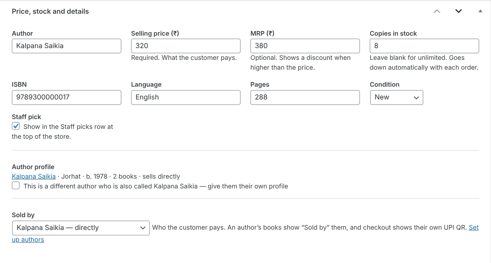
| Field | What it does |
|---|---|
| Author | The author’s name as printed. It links the book to an author profile, which is made automatically the first time a name is used. |
| Selling price (₹)Required | What the customer pays. A book without a price can’t be bought and shows No price in the book list. |
| MRP (₹) | Optional. When it is higher than the price, the store shows it struck through with the % off, and the back cover shows “MRP ₹… (Incl. of all taxes)”. |
| Copies in stock | Leave blank for unlimited. Goes down with each order and back up if an order is cancelled. At 0 the book shows “Sold out”; at or below the low stock number it shows “Only 2 left”. |
| ISBN | Shown in the details panel, printed as a scannable barcode on the back cover, and searchable in the store. |
| Language, Pages | Shown on the book page. Pages also set the thickness of the 3D book and the estimated reading time. |
| Condition | New or Pre-owned. Pre-owned books get a badge. |
| Staff pick | Shows the book in the Staff picks row at the top of the store. |
| Author profile | Which profile the book belongs to, for authors who share a name. See Authors with the same name. |
| Sold by | The store, or an author who sells directly. Appears once Direct sales are switched on. |
The book list
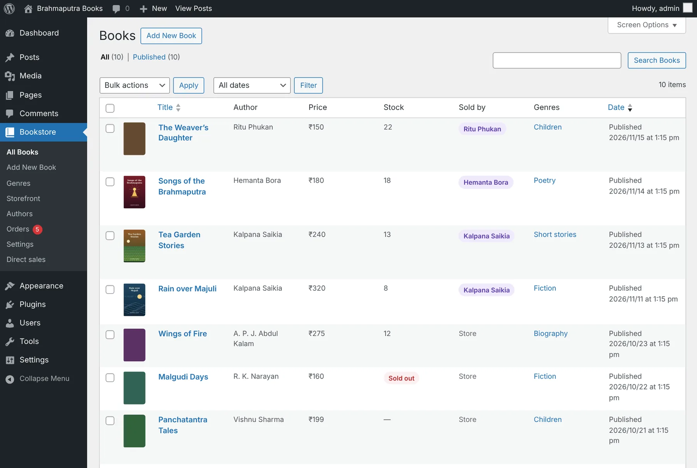
Bookstore → All Books shows each book’s cover, author, price and stock. Stock is highlighted when it is low or sold out. With direct sales on, Sold by shows the store or the author, and “Author not ready” when the chosen author can’t take payment yet. A book whose author name is shared by more than one profile shows “Shared name — choose the author profile”.
Sample books
While you have no books, Add 6 sample books on the Settings page adds six well-known Indian titles — Godaan, Gitanjali, The Discovery of India, Panchatantra Tales, Malgudi Days and Wings of Fire — with prices, stock and author profiles. They are ordinary books: edit or delete them like any other.
The catalogue
Author profiles
Every author gets a profile with a photo, a short biography and a page that lists all their books. Profiles are created from each book’s Author field, so most of the time you only add the details.
The Authors screen
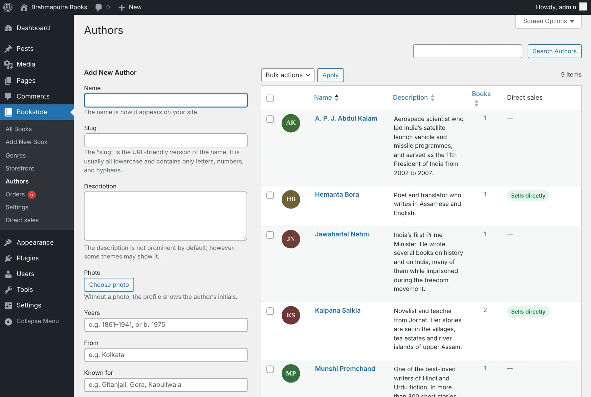
Bookstore → Authors lists every profile with its photo (or initials), biography, number of books and whether the author sells directly. Click a name to edit it.
Profile details
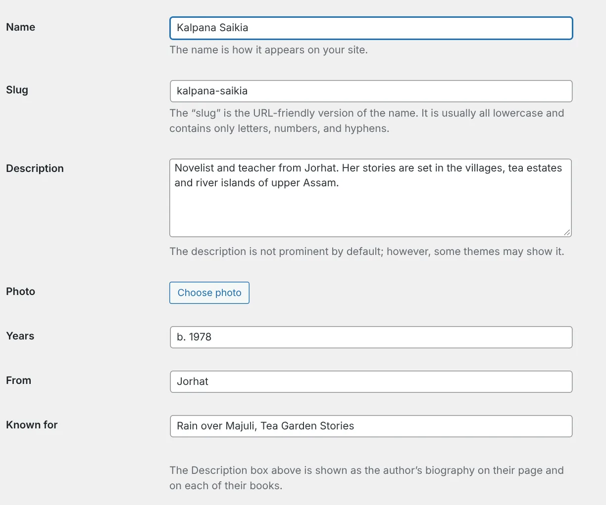
- Name: as on the books. Renaming a profile also changes the Author field of its books.
- Description: the biography, shown on the author page and under “About the author” on each book page.
- Photo: without one, the profile shows the author’s initials.
- Years (for example
1861–1941orb. 1975), From (hometown) and Known for (best-known works).
Below these is the Direct sales section, for authors who sell their own books. See Setting up an author.
The author page
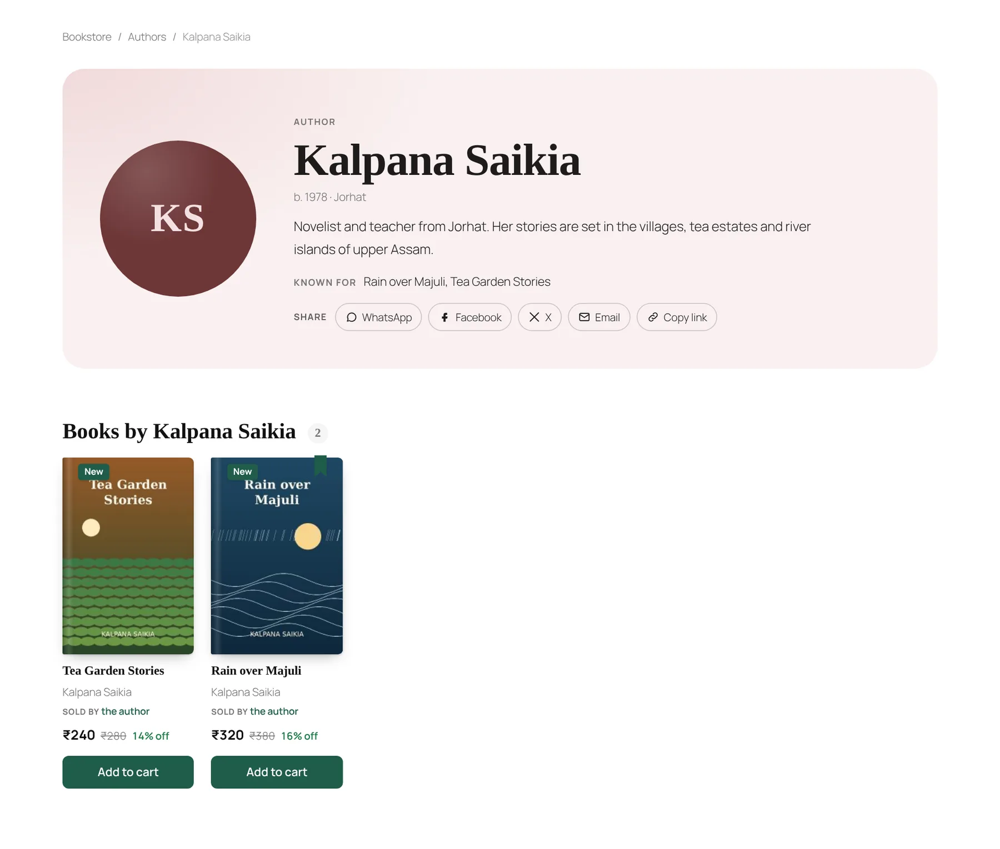
Each author has a page at yoursite.com/book-author/name/, linked from their books. It shows the profile, the share buttons, and all their books, which can be added to the cart straight from there.
Authors with the same name
A book is matched to a profile by name, ignoring capitals, spacing and full stops, so “A.K. Roy” and “a. k. roy” are the same author. Once a book is linked to a profile it stays with it.
When two different authors share a name:
- On the second author’s book, under Author profile, tick This is a different author who is also called …, then Update. They get their own profile.
- Or on Authors → Add New, tick A different author who has the same name as an existing profile.
- Fill in From or Years on each, so you can tell them apart. Pickers and Direct sales show both.
New books with a shared name are not guessed. When several profiles share a name, a new book with that name is flagged “Shared name — choose the author profile” until you pick one on the book screen. A wrong guess could send a customer’s money to the wrong author.
Selling
The store on your website
Customers see three kinds of page: the store, each book page, and each author page. The cart and checkout open as a drawer on top of whichever page they are on.
The store page
From the top down:
- Announcement bar: delivery and payment in one line, written from your settings unless you write your own.
- Heading and intro line, if you set them.
- Toolbar: a search box (title, author or ISBN), a sort menu (Newest, Price low to high, Price high to low, Title A–Z), the grid/list switch, a Track order button (the delivery van) and a cart button with a count.
- Genre buttons: All and one per genre. Search, genres and sorting work together, across all pages.
- Staff picks: a row of the books you ticked, scrolling sideways.
- The books, with page numbers or a Show more button underneath. Page links can be bookmarked and shared.
Each card shows the cover, title, author, price with MRP and % off, and the button. Badges mark books that are New, Only 2 left, Sold out, Pre-owned or a staff pick. Books an author sells directly say Sold by the author.
Layouts
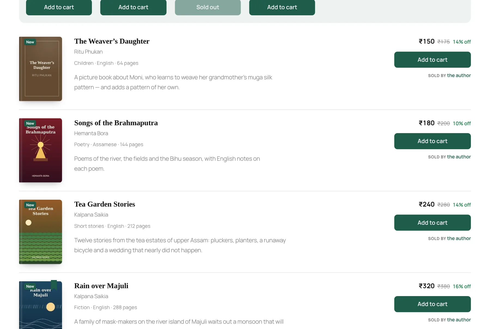
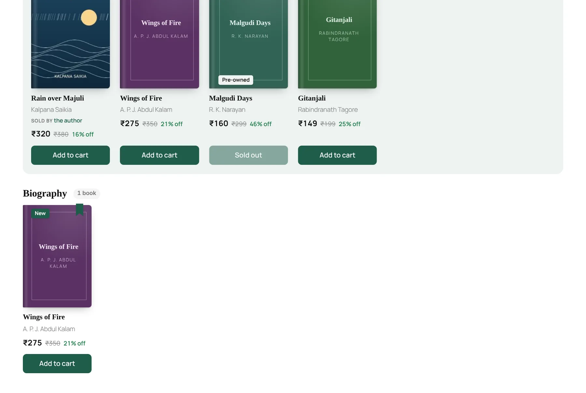
Grid is the default. Shelf rows show only whole books — as many as fit, stretched to fill the width — and their arrows move one full set at a time. Each shelf shows its number of books (“3 of 12” while searching).
The book page
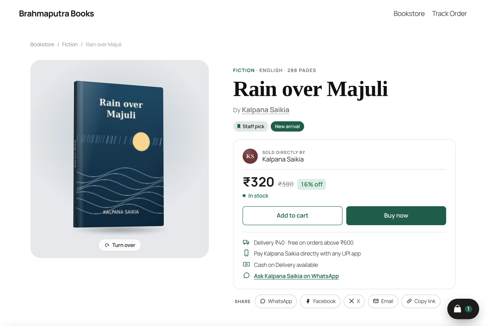
- A 3D book whose thickness follows the page count. It tilts as the mouse moves, and Turn over shows the back cover with the blurb, “MRP ₹… (Incl. of all taxes)” and a scannable ISBN barcode.
- The buying panel: price, stock, Add to cart and Buy now (straight to checkout), delivery and payment details, and a Cash on Delivery check by pincode. The pincode is remembered for checkout.
- About this book, a details panel (ISBN, language, pages, condition and an estimated reading time), About the author, More by this author and You may also like.
- A slim buy bar slides in once the main buttons scroll out of view.
- Share buttons, as set under Sharing.
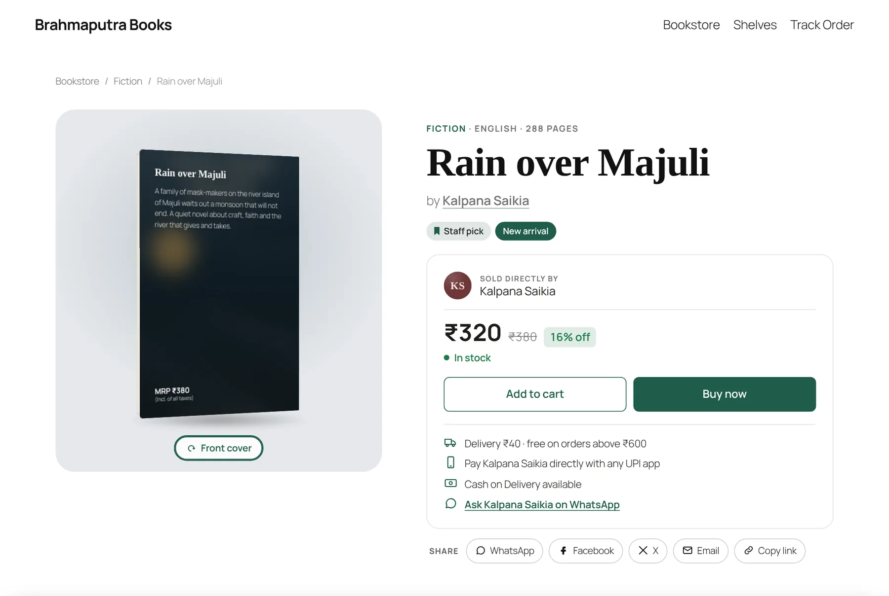
Search engines are given each book’s price, availability, ISBN and author, so they can show them in results. To use your theme’s own book page instead, turn off Use the Pustak book page design.
Shortcodes
Put the store or the tracking form on any page or post with a Shortcode block:
| Shortcode | Shows |
|---|---|
[pustak_store] | The catalogue. |
[pustak_track] | The order tracking form. |
[pustak_store] takes these options:
| Option | Values | What it does |
|---|---|---|
genre | fiction,poetry | Only these genres (their slugs, comma separated). |
layout | grid · list · shelves | Overrides the layout chosen in the Storefront designer. |
per_page | 12 · 0 | Books per page; 0 shows all. |
limit | 100 | The most books to show (default 500). |
[pustak_store genre="poetry" layout="list"]
[pustak_store layout="shelves"]Selling
How customers buy
From the first click to a confirmed order takes three screens in one drawer: the cart, the checkout, and payment. Nobody needs an account.
The cart
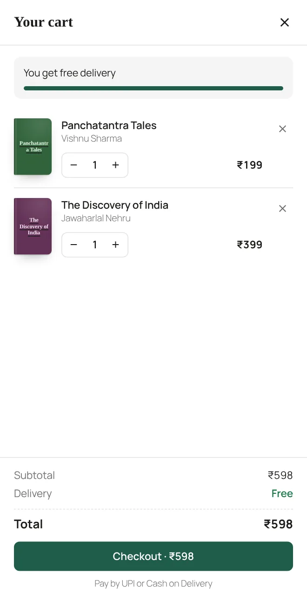
Add to cart drops the book into the cart and a floating cart button shows the count. The cart:
- shows how much more is needed for free delivery, with a progress bar;
- lets the customer change quantities (never more than are in stock) or remove a book;
- is kept on their device, so it is still there when they come back.
If the customer adds a book from a different seller — an author’s book to a cart of store books, say — the drawer asks them to Check out my cart first or Empty my cart and add this book. See One seller per order.
Checkout
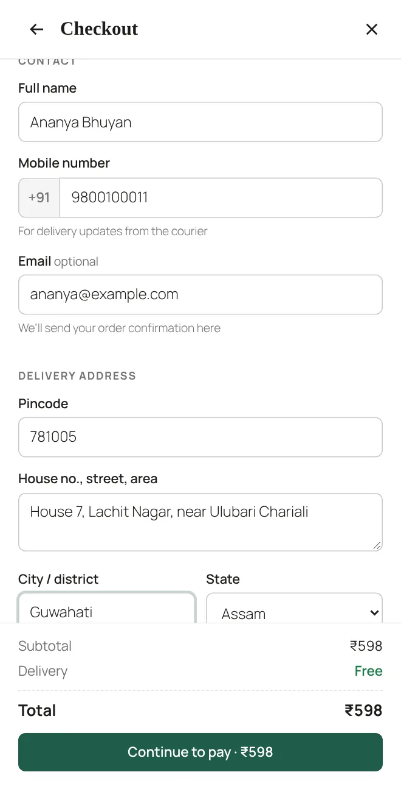
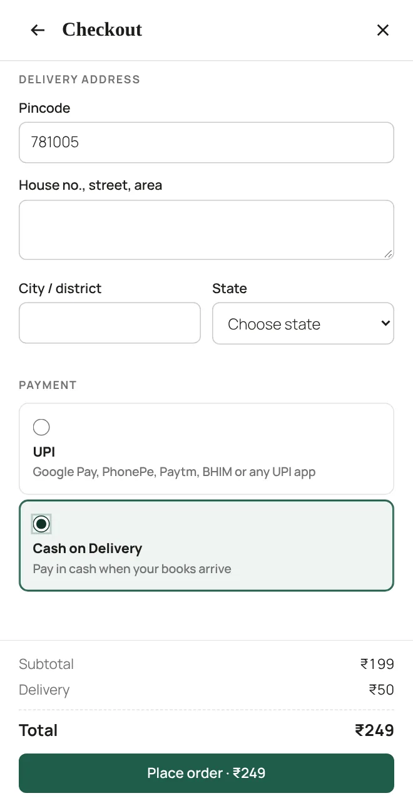
- Contact: full name, a 10-digit mobile number (for courier updates), and an optional email for the order confirmation and updates.
- Delivery address: the pincode first — with Pincode auto-fill on, the city and state fill themselves — then house number and street, city or district, and state.
- Payment: UPI or Cash on Delivery. COD is offered only where your COD settings allow it for this total and pincode; otherwise the checkout says why.
The button shows the total: Continue to pay · ₹598 for UPI, Place order · ₹598 for COD. After the first order, the customer’s details are remembered on their device and filled in next time. Prices and stock are always checked again on your server, so a changed price or a book that just sold out is caught before the order is made.
Paying by UPI
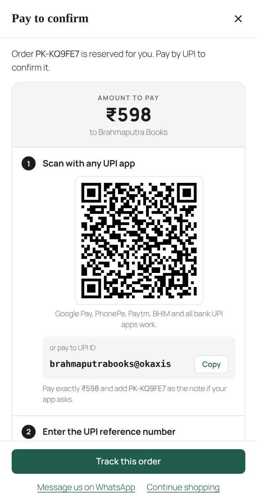
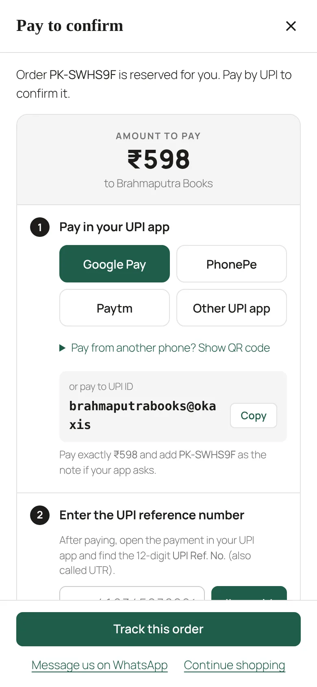
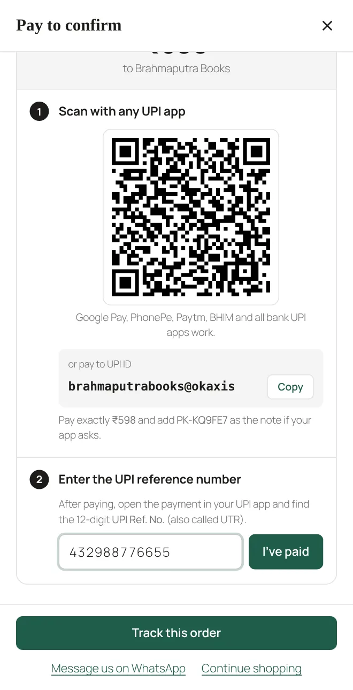
The order is placed and the books are reserved. The customer then:
- Pays. On a computer they scan the QR code with any UPI app. On a phone they tap Google Pay, PhonePe, Paytm or Other UPI app, which opens with the amount and your UPI ID filled in (or Pay from another phone? Show QR code). The UPI ID can also be copied and paid by hand. The order number goes in the payment note.
- Enters the UPI reference number — the 12-digit UPI Ref. No. or UTR shown in their app after paying — and taps I’ve paid.
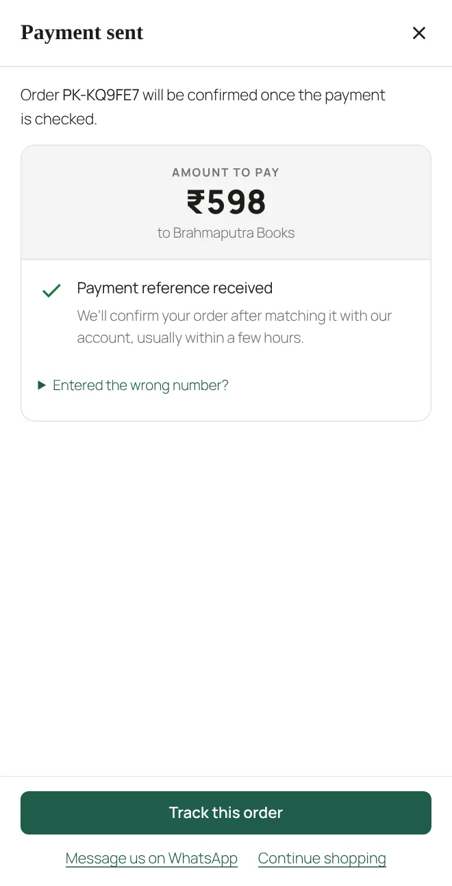
The order is now and you are emailed. If the customer closes the drawer before paying, they can pay later from the Track Order page or the link in their email. A wrong reference can be corrected with Entered the wrong number?
Cash on Delivery
A COD order is Confirmed at once: there is nothing to verify. The customer sees the total to keep ready, including any COD charge.
What the customer is emailed
If the customer gave an email address, they get one when the order is placed (with the items, total, address and a tracking link) and when it is Confirmed, Shipped (with the courier and tracking number), Delivered or Cancelled. They are also emailed about return requests, recorded returns and refunds.
Hi Anjali Das, Thanks for your order PK-A2KANR. Please complete the UPI payment of ₹398 to confirm it. If you have already paid, enter the UPI reference number on the tracking page so we can confirm it quickly. 1 × Gitanjali — ₹149 1 × Panchatantra Tales — ₹199 Subtotal: ₹348 Delivery: ₹50 Total: ₹398 Payment: UPI Deliver to: Anjali Das, 9800100001 House 14, Rukmini Nagar, near Dispur Post Office Guwahati, Assam 781006 Track your order: https://yoursite.com/track-order/?order=PK-A2KANR
The Track Order page
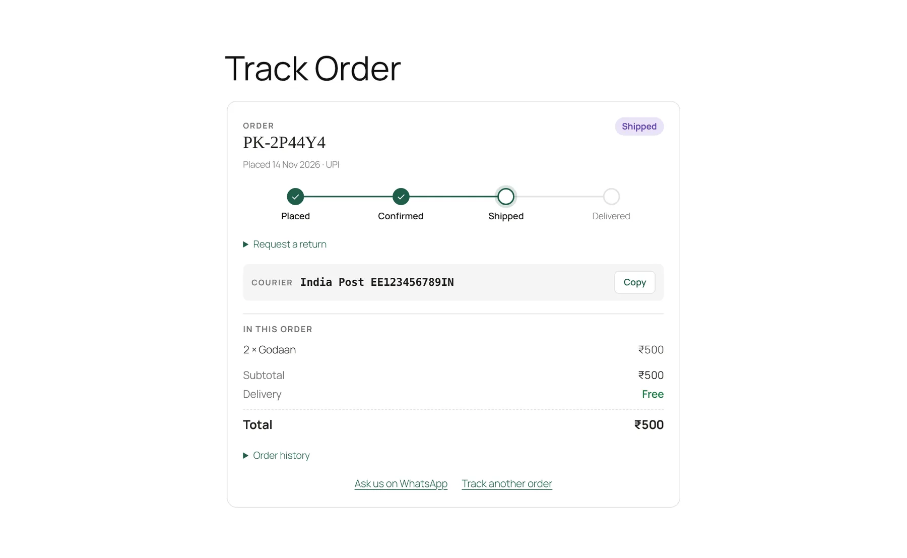
Customers look up an order with its order number and the mobile number it was placed with. The link in their email fills in the number for them, and the last order placed on their device opens by itself. The page shows:
- the status and a progress line: Placed → Confirmed → Shipped → Delivered;
- the payment panel, while a UPI order is still unpaid;
- the courier and tracking number, with a Copy button;
- the books, total and delivery address, and the Order history with your notes;
- returns and refunds, and Request a return once the order has shipped;
- Ask us on WhatsApp, if you set a WhatsApp number.
Asking for a return
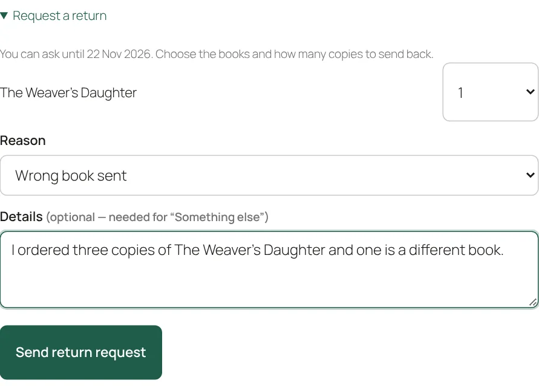
Within the return window, Request a return on the Track Order page lets the customer choose the books and how many copies, a reason, and add details. The reasons are:
- Arrived damaged · Printing or binding fault · Wrong book sent · Wrong edition, language or format · Not as described · Fewer copies than ordered · Received the same book twice · Ordered by mistake or no longer needed · Arrived too late · Something else (details required)
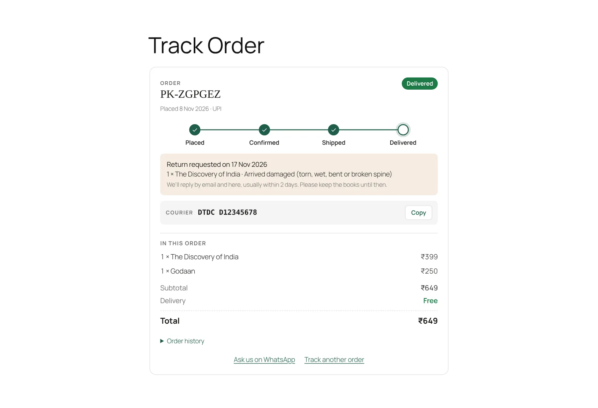
The customer is emailed a confirmation and the page shows the request and, later, your answer. One request can be open per order; after a decline the customer can ask again within the window. What you do next is in Answering a return request.
Orders
How orders work
Every order has a number like PK-7Q4M9X — letters and digits that can’t be confused, such as no O and 0 — a status, and a timeline of everything that happened to it.
Order statuses
| Status | Means | Next |
|---|---|---|
| Awaiting payment | A UPI order was placed; the customer hasn’t given a payment reference yet. The books are reserved. | The customer pays and enters the reference, or you cancel it. |
| The customer says they paid and gave a UPI reference. You are emailed. | You check the payment arrived and click Payment received. | |
| Confirmed | Paid (UPI), or a Cash on Delivery order. Ready to pack. | Send it and click Mark shipped. |
| Shipped | The parcel is on its way, usually with a courier and tracking number. | Mark delivered when it arrives. |
| Delivered | The customer has the books. The return window counts from now. | Done, unless books come back. |
| Cancelled | Won’t be sent. The books go back into stock. | Refund the customer if they paid by UPI. |
| Partly returned | Some copies came back after shipping. | Set by recording a return, not from the status list. |
| Returned | Every copy came back. | Set by recording a return. |
How UPI payments work
UPI pay-links send money straight to your UPI ID, so there is no automatic confirmation. Instead:
- The customer places the order → Awaiting payment. Stock is reserved.
- The customer pays from their UPI app and enters the 12-digit UPI reference number → . You get an email: “Verify payment for PK-…”.
- You find that reference in your UPI app or bank statement and check the amount → click Payment received → Confirmed. The customer is emailed.
Unpaid orders are not cancelled automatically. An order that stays Awaiting payment keeps its books out of stock. Cancel such orders after a day or two to put the books back — filter the Orders list by Awaiting payment to find them.
How Cash on Delivery works
A COD order starts at Confirmed. You pack it, ship it and mark it delivered when the courier has collected the cash. The order screen reminds you how much to collect.
Stock
- Copies come off stock when an order is placed, whatever the payment method.
- Cancelling puts them back; un-cancelling takes them off again.
- Returned copies go back only if you tick Put these books back in stock when you record the return. Books that were returned and restocked are never counted twice if the order is later cancelled.
- Books with a blank stock are unlimited and never change.
Safety checks
- Prices, stock and delivery charges are worked out on your server, never taken from the customer’s browser.
- A hidden field turns away spam robots, and each network can place at most 8 orders in 15 minutes.
- Tracking, payment references and return requests are limited to a few tries every 15 minutes, and need the order’s mobile number (or the secret link from checkout).
Orders
Running orders
Day to day, everything happens from Bookstore → Orders. Most orders need only one click in the list to move them on.
What needs you
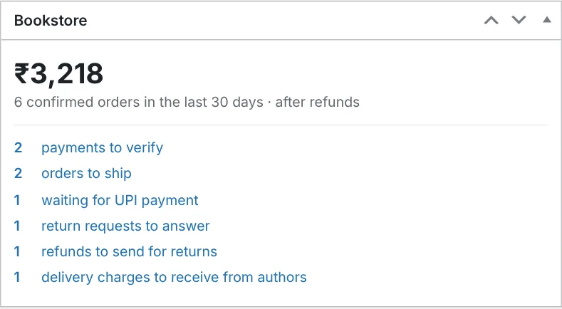
The Bookstore box on the WordPress dashboard shows your takings from confirmed orders in the last 30 days, after refunds, and links to each list that needs you: payments to verify, orders to ship, orders waiting for UPI payment, return requests, refunds to send and delivery charges due from authors.
The red count beside Orders in the menu is payments to verify, orders to ship and return requests together.
The Orders list
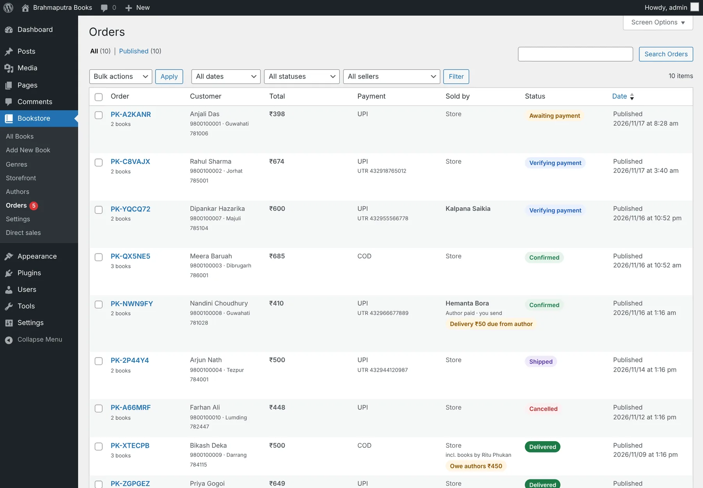
- Columns: order number and number of books, customer with phone, city and pincode, total, payment (UPI with the customer’s UTR, or COD), seller, status and date. Return requests and refunds to send are flagged under the status.
- Filters: by status, and — with direct sales on — by seller: the store, Authors’ books you send, or one author.
- Search: by order number, customer name or phone number.
- One-click actions: hover over an order to see the next step — Payment received, Mark shipped or Mark delivered. Use the order screen when you want to add a tracking number or a note.
The order screen
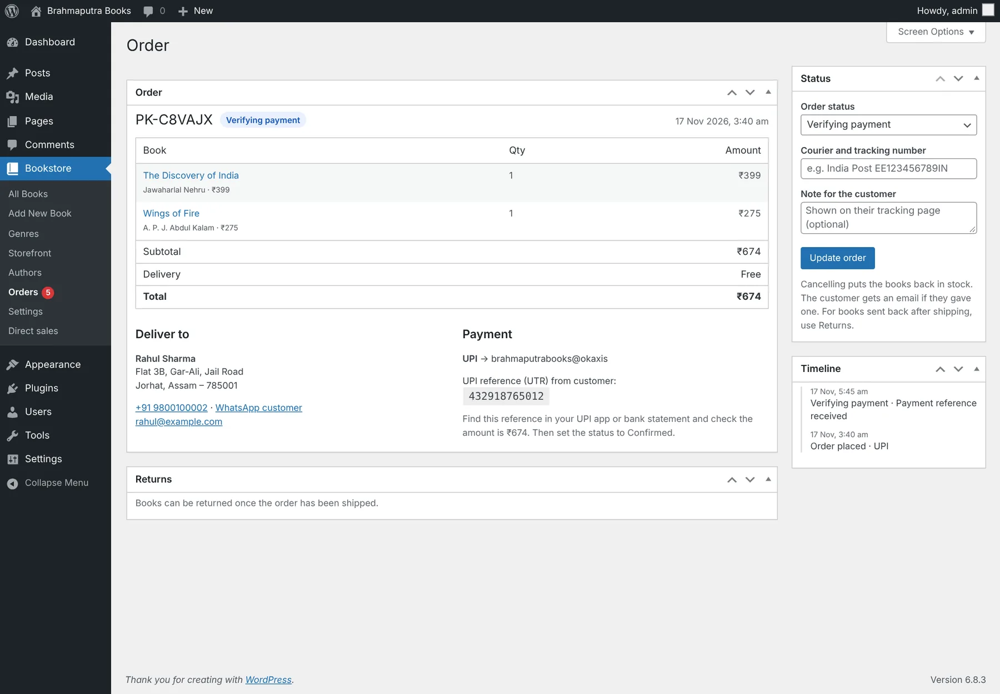
- Order: the books (linked to their pages), quantities and amounts, subtotal, delivery, any COD charge, the total, and refunds if there were returns.
- Deliver to: the address, a tap-to-call phone number, WhatsApp customer (with a ready-written message about the order’s status) and their email.
- Payment: COD with the amount to collect, or UPI with the UPI ID that was paid and the customer’s reference (UTR), and what to check before confirming.
- Returns: return requests, returns and refunds. See Returns and refunds.
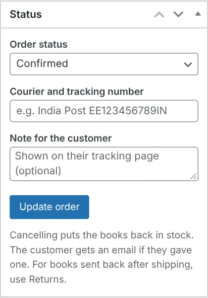
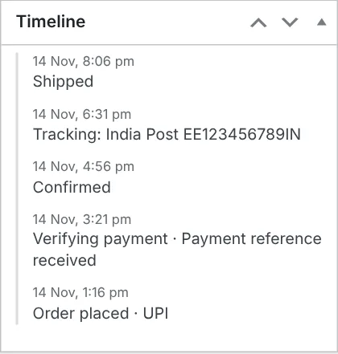
In the Status box on the right:
- Order status: pick the new status.
- Courier and tracking number: for example
India Post EE123456789IN. It is shown on the tracking page and in the Shipped email. - Note for the customer: optional, shown in their order history.
- Update order saves everything.
The Timeline records every change with its date and time: payments, status changes, tracking numbers, notes, returns, and actions taken by authors. Notes about money between you and an author are kept here for you and not shown to the customer.
Sending an order
- Pack the books of a Confirmed order.
- On the order screen, type the courier and tracking number, set the status to Shipped and click Update order.
- The customer is emailed with the tracking number and the tracking page shows it.
- When it arrives, use Mark delivered in the list. The customer is emailed, and the return window starts.
Cancelling
Set the status to Cancelled. The books go back into stock and the customer is emailed that any UPI payment will be refunded to the same account — send the refund from your UPI app. To cancel an order by mistake, set it back to its earlier status; the books come off stock again. For books that came back after shipping, don’t cancel: record a return.
Emails to you
| When | |
|---|---|
| New order PK-… · ₹… | An order is placed, with the books, address and payment. |
| Verify payment for PK-… | A customer enters a UPI reference, with a link to the order. |
| Return request for PK-… | A customer asks for a return. |
| Author updates | An author selling directly confirms a payment, sends a parcel, records a return or sends a refund, or pays you a delivery charge. |
All go to Order emails go to. Every email’s subject starts with your store name in brackets. Emails go out from your site’s usual WordPress sender address; an SMTP plugin lets you choose that address. Authors’ replies to their emails come back to your order email.
Orders
Returns and refunds
A return can start with the customer asking on the tracking page, or simply with a parcel coming back. Either way, you record what came back in the order’s Returns box and then mark the refund as sent.
Answering a return request
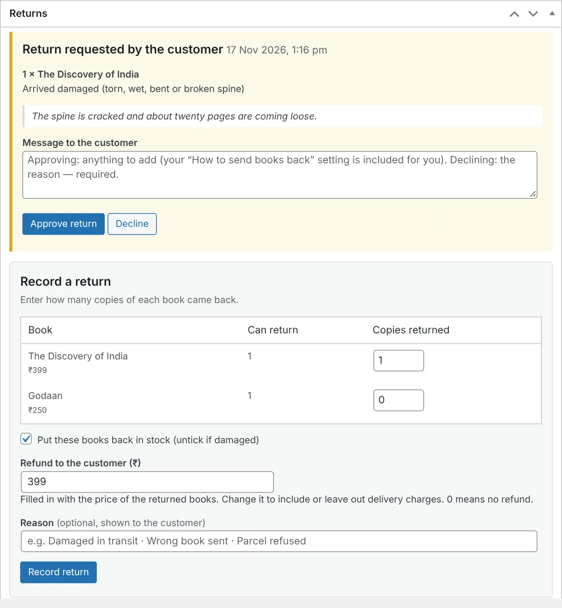
A new request shows Return requested in the Orders list, the dashboard and the menu count, and you are emailed. On the order:
- Read the books, reason and the customer’s note at the top of the Returns box.
- Write a message to the customer. To approve, add anything you like — your How to send books back text is included for you. To decline, give the reason; it is required.
- Click Approve return or Decline. The customer is emailed and the tracking page shows your answer.
- When the books arrive, record the return (below). The form is already filled in from the request, and recording it closes the request.
Recording a return
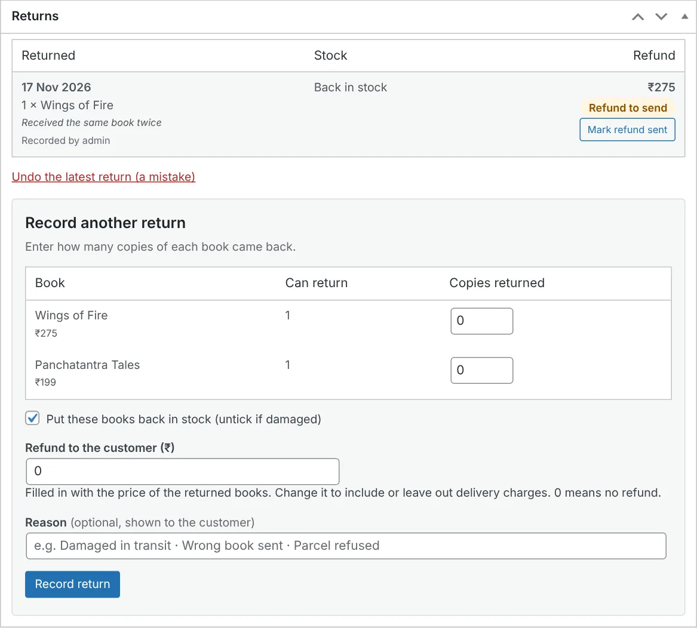
Returns can be recorded on shipped, delivered and partly returned orders.
- Enter how many copies of each book came back. You can record several returns on one order.
- Leave Put these books back in stock ticked, or untick it for damaged copies.
- Check the Refund to the customer. It starts at the price of the returned books; change it to include delivery, or set 0 for no refund.
- Add a reason if you like (the customer sees it) and click Record return.
The order becomes Partly returned or Returned, the customer is emailed, and the tracking page shows the return. While an order has returns, its status list is locked: the status follows the returns.
A Cash on Delivery parcel that came back undelivered (refused or returned to sender) starts with a ₹0 refund, because the customer never paid.
Sending the refund
Send the money back from your UPI app or bank, then click Mark refund sent on the return. The customer is emailed. Until then the return shows “Refund to send”, and the dashboard and Orders list count it.
Undoing a mistake
Undo the latest return (a mistake) takes its books back out of stock and puts the order back to its earlier status. Nobody is emailed.
Returns of authors’ books
| Who sent the parcel | Who answers and records it | Who refunds |
|---|---|---|
| The author sent it and was paid | The author, on their order page — or you, on the order screen. | The author, who taps Refund sent. |
| The author was paid, you sent it | You: the books come back to you, with your instructions. | The author refunds the price of the books (not delivery) and taps Refund sent. |
| You were paid and sent it | You. | You. The returned books come off what you owe the author; see Settling up after returns. |
Everyone involved is emailed: the author when you record a return, and you when the author records one or sends a refund.
Authors who sell
Direct sales by authors
Direct sales let authors sell their own books through your store. You keep the catalogue, orders and tracking in one place, and each author chooses how they are paid and who sends the parcel.
Turning direct sales on
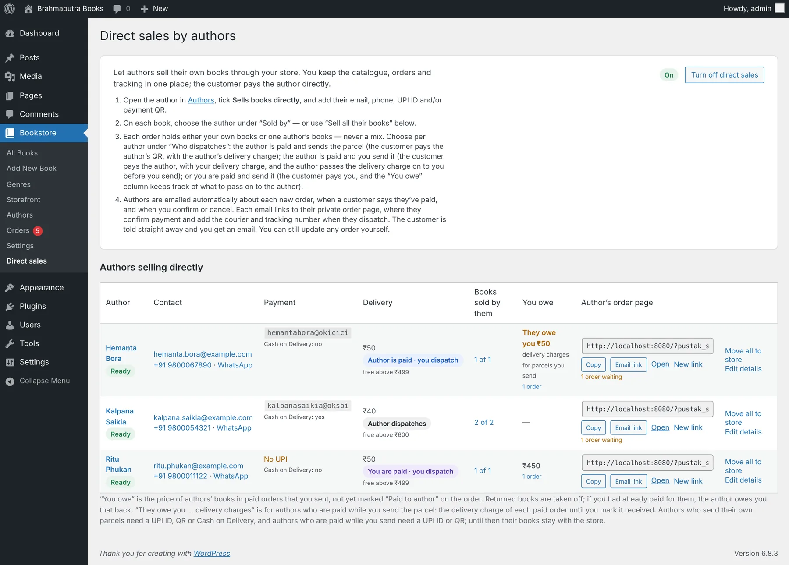
Go to Bookstore → Direct sales and click Turn on direct sales. While they are off, every book is sold and paid to the store, whatever its Sold by says. Then:
- Set up each author on their profile (below).
- On each of their books, choose them under Sold by — or click Sell all their books on this page. Move all to store does the opposite.
Setting up an author
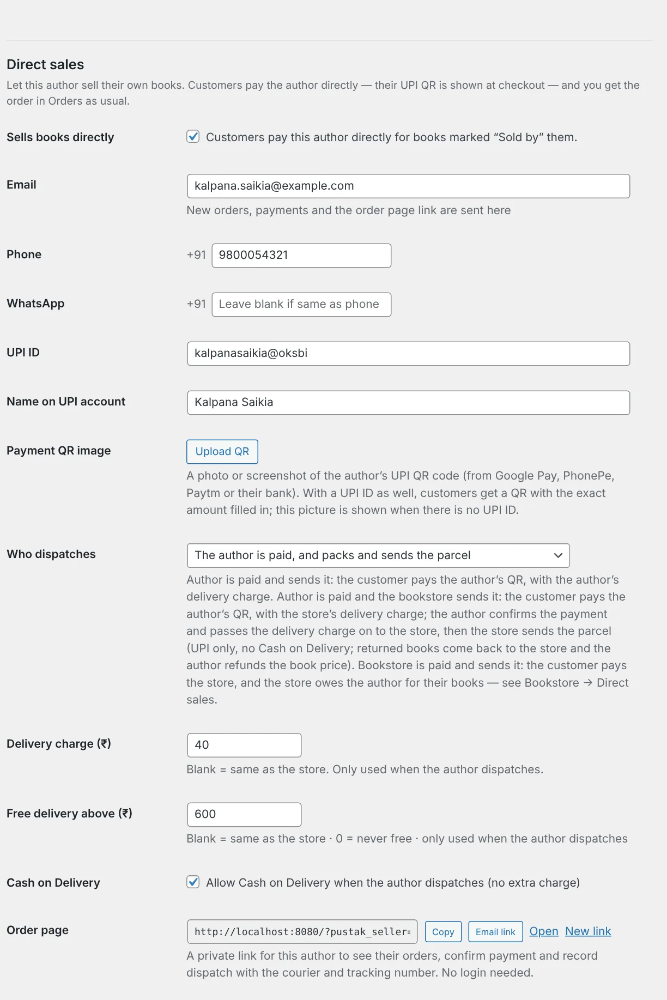
Open the author under Bookstore → Authors. In the Direct sales section:
- Sells books directly: tick it.
- Email: new orders, payments and their order page link go here. Without one the author isn’t told automatically.
- Phone and WhatsApp (blank if the same as the phone).
- UPI ID, Name on UPI account (shown as “Pay to …”), and a Payment QR image — a screenshot of their QR from Google Pay, PhonePe, Paytm or their bank. With a UPI ID, customers get a QR with the exact amount filled in; the picture is used only when there is no UPI ID.
- Who dispatches: see the next section.
- Delivery charge and Free delivery above: the author’s own, used only when they send the parcel. Blank means the same as the store; 0 for free delivery above means never free.
- Cash on Delivery: allowed when the author sends the parcel, with no extra charge.
An author is Ready once customers have a way to pay them. Until then their books stay with the store, and the book list says “Author not ready”.
Who dispatches
Each author works in one of three ways. Whoever sends the parcel is paid for the whole order, with one delivery charge — the customer pays once.
| Choice | The customer pays | Delivery charge | Who sends | Needs |
|---|---|---|---|---|
| The author is paid, and packs and sends the parcel“Author dispatches” | The author, to their QR or by COD | The author’s | The author | A UPI ID, QR or Cash on Delivery |
| The author is paid, and the bookstore packs and sends the parcel“Author is paid · you dispatch” | The author, by UPI only | Yours, which the author passes on to you | You | A UPI ID or QR |
| The bookstore is paid, and packs and sends the parcel“You are paid · you dispatch” | You | Yours | You, and you owe the author for their books | Nothing more |
The money between you and the author in the second and third ways is covered in Settling up with authors.
What customers see
- Store cards say Sold by the author; the cart says who sells each book.
- The book page has Sold directly by with the author’s delivery and payment details and an Ask … on WhatsApp link.
- Checkout shows the QR, UPI ID and delivery charge of whoever is paid. If that seller doesn’t take the customer’s chosen payment method, their order uses the other one, and checkout says so.
- Tracking and emails say “Sold by [author]”, or “Sold by [author] · sent by [store]” when you send it.
One seller per order
A cart holds either the bookstore’s own books or one author’s books — never a mix, whoever sends them. If a shopper adds a book from a different source, the drawer explains why and offers Check out my cart first or Empty my cart and add this book. So every order has one seller, one payment, one parcel and one tracking number.
Keeping authors informed
Authors are emailed automatically, from your store, with a link straight to the order on their page:
| When | |
|---|---|
| New order PK-… for your books | An order for their books is placed: the books, amount, delivery address and their order page link. |
| Payment sent for PK-… · please check | The customer says they have paid, with the UPI reference. |
| Order PK-… confirmed / cancelled | You confirm or cancel one of their orders. |
| Order PK-… has been sent | You send a parcel that includes their books. |
| Order PK-… includes your books · ₹… due to you | An order you are paid for and send includes their books (the third way), with what you will owe them. |
| Returns and refunds | A customer asks for a return, a return is recorded, or a refund is due from them. |
Replies come to your order email. Authors without an email are flagged on Direct sales and in Orders, with a WhatsApp link as a fallback. Email the author the order again on any order resends it.
The Direct sales page
The table lists each author selling directly:
- Author, with Ready or what is missing; Contact; Payment (UPI ID, QR image, Cash on Delivery yes or no); Delivery (charge, free delivery limit and who dispatches).
- Books sold by them: for example “1 of 2”, linked to the list of their books, with Sell all their books.
- You owe: what you owe them for their books, and They owe you amounts. See Settling up.
- Author’s order page: their private link, with Copy, Email link, Open and New link, and how many orders are waiting for them.
Authors who sell
The author’s order page
Each selling author gets a private link to their own order page. There is no login and nothing to install: it works in any phone’s browser.
The private link
The link looks like yoursite.com/?pustak_seller=…, with a long secret code. It is in every email the author gets. From Bookstore → Direct sales or the author’s profile you can copy it, email it to them, or make a New link — the old one stops working at once, and the new one is emailed to the author. Do that if a link is shared by mistake.
What the author sees
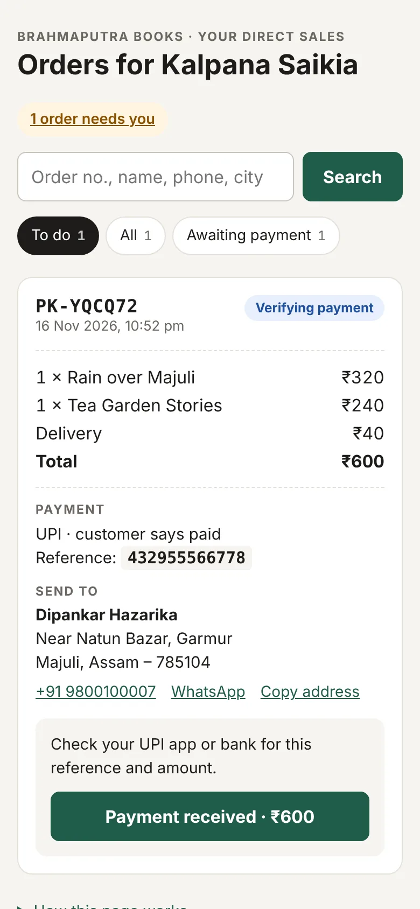
- A summary: how many orders need them, delivery charges they owe you, and what you owe them.
- Search by order number, customer name, phone or city.
- Lists with counts: To do, All, Awaiting payment, Confirmed, Shipped, Delivered, Returns, Cancelled, and Sent by the bookstore. Twenty compact rows a page, newest first; To do says what to do for each.
- The order, tapped open: books, total, payment and the customer’s reference, the delivery address with call, WhatsApp and Copy address, and the button for the next step. After acting, the author comes back to the same list.
The page loads one page of orders at a time, so it stays quick however many orders an author has.
What authors do there
| Button | When | What happens |
|---|---|---|
| Payment received | The customer’s money has reached them. | The order is Confirmed and the customer is emailed. |
| Dispatched (courier and tracking number) | They send the parcel themselves. | The order is Shipped; the customer gets the tracking email; you are emailed. |
| Mark delivered | Their parcel has arrived. | The order is Delivered. |
| Approve / Decline | A customer asks to return books they sent. | The customer is emailed the answer and the author’s instructions. |
| Record a return | Books came back to them. | As on the order screen: copies, restock, refund. |
| Refund sent | They have refunded the customer. | The customer and you are emailed. |
| Delivery charge paid | They have passed your delivery charge on (when you send their parcels). | You are emailed to check it arrived. |
Authors whose parcels you send see only the payment, delivery charge and refund steps: you do the shipping and answer return requests. A How this page works section at the bottom explains it all in their words.
You can always do any of these yourself on the order screen. The author is emailed when you confirm, cancel or send one of their orders.
Authors who sell
Settling up with authors
When an author is paid and sends the parcel, there is nothing to settle. In the other two ways, money passes between you and the author after each order, and Pustak keeps count.
You are paid and send it: you owe the author
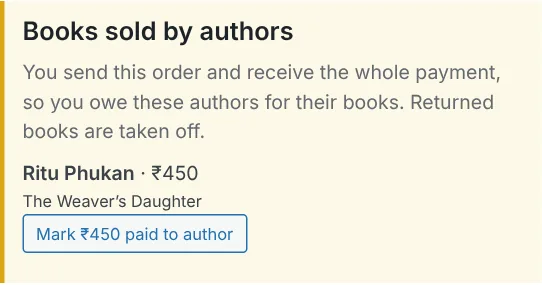
The customer pays you for the whole order, delivery included, and you owe the author the price of their books. For example, Bikash orders three copies of Ritu Phukan’s The Weaver’s Daughter at ₹150, by Cash on Delivery:
| Bikash pays you | 3 × ₹150 + ₹50 delivery = ₹500 |
| You owe Ritu | 3 × ₹150 = ₹450 (delivery is yours) |
- Once the order is paid (Confirmed, Shipped or Delivered), its Books sold by authors box shows Mark ₹450 paid to author. The Direct sales page adds it to the author’s You owe total, and Orders can be filtered by Authors’ books you send.
- Pay the author the way you have agreed, then click the button. It shows Paid to author, with Undo.
The author is paid and you send it: the delivery charge
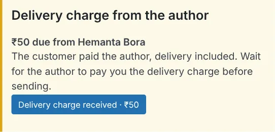
For authors whose books you keep and post but who want the money to come to them. Nandini orders two copies of Hemanta Bora’s Songs of the Brahmaputra at ₹180:
- Nandini pays Hemanta the whole amount by UPI: 2 × ₹180 + your ₹50 delivery = ₹410. Your delivery charge and free-delivery limit apply.
- Hemanta checks the money arrived and taps Payment received. The order is Confirmed.
- Hemanta pays you the ₹50 delivery charge — his page shows your UPI ID and a pay link with the amount — and taps Delivery charge paid. You are emailed.
- You check it arrived and click Delivery charge received on the order, or in the Orders list. Hemanta is emailed.
- You pack and send the parcel and mark it Shipped with the tracking number, as usual. Nandini and Hemanta are emailed.
Until it is received, the order shows “Delivery ₹50 due from author”, Direct sales shows “They owe you ₹50 delivery charges”, and the dashboard counts it. You can send the parcel first if you like; the charge stays due. If the order qualified for free delivery, nothing is passed on, and you can send it as soon as the author confirms the payment.
If you cancel such an order, the author is asked to refund the customer in full; if you had already received the delivery charge, the order reminds you to return it.
Settling up after returns
- You were paid and sent it: returned books come off what you owe the author. If you had already paid them, the order shows “Author owes you ₹… back” with Mark received back, and Direct sales shows “They owe you”. The author is emailed.
- The author was paid and you sent it: the books come back to you, and the author refunds the customer the price of the books — delivery isn’t refunded — then taps Refund sent.
- The author was paid and sent it: the author refunds the customer. Nothing passes between you.
Reference
For developers
Pustak keeps everything in standard WordPress data: posts, terms, post meta and options. There are no custom database tables.
Data
| What | Stored as |
|---|---|
| Books | Post type book (public, archive at /books/, single pages at /book/slug/). Shop details in post meta: _pustak_author, _pustak_price, _pustak_mrp, _pustak_stock (blank = unlimited), _pustak_isbn, _pustak_language, _pustak_pages, _pustak_condition (new / used), _pustak_featured, _pustak_seller (author term ID, blank for the store). |
| Genres | Taxonomy book_genre (hierarchical, /genre/slug/). |
| Authors | Taxonomy book_author (/book-author/slug/). Term meta _pustak_life, _pustak_place, _pustak_known, _pustak_photo; direct-sales fields as _pustak_ds_*, including the private page key _pustak_ds_key. |
| Orders | Private post type pustak_order. Post meta includes _pustak_number, _pustak_key, _pustak_status, _pustak_items, _pustak_subtotal, _pustak_shipping, _pustak_cod_fee, _pustak_total, the customer fields, _pustak_payment, _pustak_utr, _pustak_tracking, _pustak_log, _pustak_seller_key, _pustak_ships, _pustak_returns and _pustak_requests. |
| Settings | Options pustak_settings (Settings page), pustak_design (Storefront) and pustak_direct_sales (on/off). |
Seller keys used throughout are store or a{term_id} for an author.
REST API
The store’s script talks to these routes under /wp-json/pustak/v1:
| Route | Method | Does |
|---|---|---|
/books | GET | Current price and stock of up to 50 books, by ?ids=1,2,3, so the cart stays up to date. |
/orders | POST | Places an order (one per seller). Limited to 8 per network per 15 minutes. |
/orders/{number}/payment | POST | Saves the customer’s UPI reference (UTR) and moves the order to Verifying payment. |
/orders/{number}/return | POST | A customer’s return request. |
/track | POST | Looks up an order for the tracking page. |
Order routes are authorised by the order’s secret key (given to the customer’s browser at checkout) or by the mobile number on the order, and are rate-limited per network.
Actions
| Action | Arguments | Fires when |
|---|---|---|
pustak_order_created | $order_id | An order is saved. |
pustak_order_status_changed | $order_id, $old, $new | Any status change. |
pustak_order_returned | $order_id, $index, $record | A return is recorded. |
pustak_order_refunded | $order_id, $index, $record | A refund is marked sent. |
pustak_return_requested | $order_id, $index, $request | A customer asks for a return. |
pustak_return_decided | $order_id, $index, $request | A request is approved or declined. |
pustak_author_update | $order_id, $what, $author | An author acts on their page: paid, shipped, tracking or delivered. |
pustak_fee_update | $order_id, $what, $by | A delivery charge from an author is sent, received or undone (undo). |
All of Pustak’s emails are sent from these actions, so you can add your own (an SMS, a WhatsApp Business message, an accounting entry) the same way.
Templates
Copy a template into a pustak folder in your theme to change it:
yourtheme/pustak/single-book.php— the book page.yourtheme/pustak/author.php— the author page.
Both work in block themes and classic themes. The store and tracking page are shortcodes, styled through the Storefront designer.
Translation and privacy
- All text uses the text domain
pustak. - Pincode auto-fill sends only the pincode, from the customer’s browser, to the India Post service at
api.postalpincode.in. Turn it off under Delivery. - Google fonts are loaded only when you choose one in the Storefront designer.
- The customer’s cart, details and last order are kept in their own browser’s storage, not in cookies.
- Authors’ order pages are never cached and ask search engines not to index them.
Help
Troubleshooting and questions
Nobody is getting emails
Many hosts don’t deliver WordPress email reliably. Install an SMTP plugin (for example WP Mail SMTP), connect it to a real mailbox and send a test email. Check Order emails go to. To test one author, use Email link on Bookstore → Direct sales; if it fails, the page says so.
An author isn’t getting emails
Check that their profile has an email address under Direct sales — authors without one are flagged “No email yet”. Then see above. On any order you can click Email the author the order again, or use the WhatsApp link instead.
The customer’s UPI app won’t pay
Some apps block pay-links with a fixed amount to personal UPI IDs. Use a business or merchant UPI ID. Meanwhile, customers can still scan the QR code or pay the UPI ID by hand.
A customer paid but didn’t enter the reference
If you can see the payment in your UPI app or bank — matching the amount, and often the order number in the note — set the order to Confirmed yourself, or click Payment received in the Orders list. If they typed a wrong reference, they can correct it on the tracking page with Entered the wrong number?.
Books show as sold out but nobody paid
Unpaid UPI orders keep their books reserved. Filter Orders by Awaiting payment and cancel the old ones; the books go back into stock.
The store or tracking page is missing
Use Recreate missing store pages on the Settings page, then check that Store page and Track order page point to them.
Book or author pages say “not found”
Go to Settings → Permalinks in WordPress and click Save Changes without changing anything. Pustak also refreshes permalinks once after each update.
The book page looks wrong in my theme
Pustak’s book page works with block and classic themes. If your theme fights it, turn off Use the Pustak book page design to use your theme’s own page with a simple buy box, or make a theme template. If you use a page-caching plugin, clear its cache after changing the Storefront.
A book is “Sold by” an author but the store is paid
Direct sales may be switched off, or the author isn’t ready: they need a UPI ID, QR or Cash on Delivery (or a UPI ID or QR if you send their parcels). The book list says “Author not ready”, and the Direct sales page says what is missing.
A book says “Shared name — choose the author profile”
More than one profile has that author’s name. Open the book, choose the right one under Author profile and Update. See Authors with the same name.
An author lost their link, or shared it
On Bookstore → Direct sales, click Email link to send it again, or New link to replace it. The old link stops working at once.
City and state don’t fill in at checkout
The free India Post pincode service is sometimes slow or down. Customers can type the city and choose the state themselves. You can turn the auto-fill off under Delivery.
Questions
Does it need WooCommerce?
No. Pustak is self-contained.
Are there any fees?
No. Customers pay you directly by UPI or in cash; there is no gateway between you.
Where are orders stored?
As private posts in your WordPress database, under Bookstore → Orders. Deleting the plugin does not delete orders or books.
Do customers need an account?
No. They track orders with the order number and their mobile number, and their details are remembered on their own device.
Can book titles be in Hindi or Assamese?
Yes. Choose Noto Serif or Mukta for titles, and Noto Sans, Mukta or Hind Siliguri for the rest, under Fonts. The button text can be in any language too.
Help
What’s new
Changes in each version of Pustak Bookstore, newest first.
2.5.0
- New: Share buttons — WhatsApp, Facebook, X, Email and Copy link — on every book page and author page.
- New Settings → Sharing: one switch for all book and author pages, and a choice of which buttons to show.
2.4.0
- Authors who share a name are no longer merged. Books keep the profile they are linked to; a new “Author profile” choice on the book lets you give a different author with the same name their own profile; books with an ambiguous name are flagged instead of guessed (so “Sell all their books” can’t pick up another author’s books). Same-name profiles can be added on the Authors screen, and are shown with their hometown and years wherever you pick an author.
- Renaming an author profile updates the Author field of its books.
- Author’s order page redesigned for many orders: summary chips, search, list tabs with counts, 20 compact rows per page with Newer/Older, and a single-order view for actions. Only one page of orders is loaded at a time.
- Emails link straight to the order on the author’s page. Older links still work.
2.3.0
- New: “Who dispatches” has a third choice — the author is paid, and the bookstore packs and sends the parcel. The customer pays the author (books and the store’s delivery charge, by UPI), the author confirms it and passes the delivery charge on to the store, then the store sends the parcel.
- Author’s order page: “Delivery charge paid” with the store’s UPI ID and a pay link for the exact amount; the parcel’s progress once the store sends it.
- Order screen: “Delivery charge from the author” box with “Delivery charge received” (also a one-click action in the Orders list). A reminder appears if you go to send before it has arrived.
- Direct sales shows the delivery charges each author still owes you; the dashboard and an Orders filter list them.
- Returns for these orders come back to the store: the store answers the request and records the return, and the author refunds the book price (not delivery) and marks it sent.
- Shop, cart, checkout, tracking and emails say “Sold by [author] · sent by [store]” for these books.
- “Authors’ books you send” in the Orders filter now includes these orders.
2.2.1
- Track order: after a failed lookup, the mobile number stays filled in so the customer can check it for typos.
- Track order: the “+91” prefix no longer wraps onto two lines in narrow or themed layouts.
2.2.0
- New: Customers can request a return from the Track Order page, choosing books, copies and a reason (9 book-specific reasons plus “Something else”), within a set number of days after delivery (default 7).
- Approve or decline requests from the order screen, or authors do it on their order page for parcels they sent. The customer, store and author are emailed at each step, and the tracking page shows the request status and reply.
- An approved request fills in the return form. Recording the return closes the request.
- New Settings → Returns section: turn requests on or off, set the return window, and add instructions for sending books back.
- The dashboard, Orders list and menu count show return requests waiting for an answer.
2.1.0
- New: Sales returns. Return some or all copies from shipped or delivered orders, with or without putting them back in stock. Each return records a refund that you mark as sent. New statuses: "Partly returned" and "Returned".
- Returns for books sent by authors: the author records returns and marks refunds sent on their order page, and the bookstore and customer are emailed. Returns recorded by the bookstore email the author with the refund to make.
- Authors' books sent by the bookstore: returned books come off what you owe the author. Anything already paid for them shows as owed back to you.
- The tracking page shows returns and refund status. The dashboard revenue is after refunds, and it lists refunds still to send.
- Cancelling an order that had restocked returns no longer puts those books back in stock twice.
2.0.0
- Authors are now kept informed by email instead of WhatsApp: new orders, payments sent by customers, confirmations, cancellations and parcels sent by the store, each with a link to their order page. Replies go to the store email.
- New: Email field on author profiles; “Email link” and “Email the author the order again” buttons; making a new order page link emails it to the author.
- Track order button: a delivery-van button next to the cart button in the store toolbar opens the Track Order page (Storefront → show/hide).
- One source per order: the bookstore’s own books and an author’s books (or two authors’ books) can’t be in the same cart; the shopper is asked to order them separately.
- “Who dispatches” per author: whoever sends the parcel is paid in full with their own delivery charge (one payment per order). When the store sends an author’s books it is paid for them, with “Mark paid to author” on each order and a “You owe” total per author.
- Direct sales by authors, author order pages and genre shelf counts (from 1.9–1.10) are all part of this release.
1.10.0
- New: Shelf per genre shows the number of books on each shelf (“3 of 12” while searching).
- New: Author’s order page — authors who sell directly confirm payment and record dispatch (courier + tracking number) from a private link; the customer and the bookstore are notified.
1.9.0
- New: Direct sales by authors. Author contact, UPI ID and QR on profiles, “Sold by” on books, one order per seller at checkout with that seller’s QR, seller shown on cards, book page, cart, tracking, emails and orders.
1.8.2
- Shelf rows (Shelf per genre, Staff picks, More by this author, You may also like) now show only whole books: as many as fit, stretched to fill the width, with no book cut off at the edge. The arrows move one full set at a time.
1.8.1
- Cards, lists and shelves always fit inside the theme's content area, in every layout, card style and book size — including narrow columns, sidebars and boxed looks.
- Space between cards shrinks smoothly with the available width instead of jumping at fixed screen sizes.
- Grid, list, toolbar and book-page layouts now switch based on the width of the theme's container, not the screen.
- The bookshelf ledge and the Staff picks panel no longer stick out past the container edges.
1.8.0
- Back cover is always readable: photo covers wrap their own blurred artwork round to the back, and generated covers use a deep tone of their colour. It no longer turns see-through in browsers or CSS optimisers that don't support colour mixing.
- Book covers stay visible when switching between grid and list, changing pages or filtering, including with lazy-loading plugins.
- Fallback colours for older browsers.
- Browsers always pick up updated styles after an update.
- Smaller store toolbar and genre buttons.
- Cart button (icon with a count) in the store toolbar; can be turned off in Storefront → Buttons and cart.
1.5.0
- Book page design with a 3D book, back cover and ISBN barcode, COD pincode check and sticky buy bar.
- Author profiles and author pages.
- Text customisation in the Storefront designer: sizes, weights, colours, line spacing, letter case and a body font.
- Grid or list view, with an optional switch for shoppers.
- Pagination with a chosen number of books per page: page numbers or a Show more button.
1.1.0
- New Storefront designer with live preview, looks, fonts, layouts, Staff picks and announcement bar.
1.0.0
- First release.